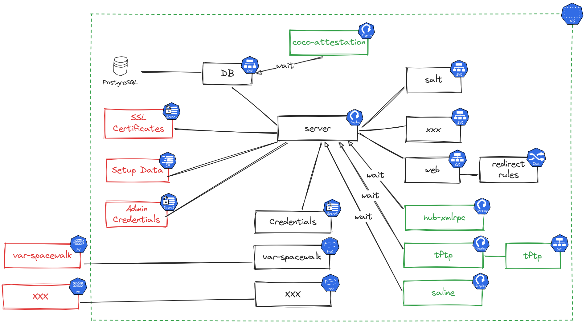

Server Deployment on Kubernetes
Uyuni can be deployed on Kubernetes using a Helm chart. This guide covers deploying Uyuni 2026.06 on RKE2.
1. Pre-Deployment Checklist
Before proceeding, ensure your environment meets these requirements:
-
Kubernetes Distribution: RKE2 (other distributions are not supported).
-
Ingress Controller: Traefik (RKE2 defaults to nginx, which is not supported).
-
Tools: Helm v3 and
kubectlconfigured with access to the cluster. -
Permissions:
cluster-adminprivileges (or access to someone who has them). -
Node-Level Access: Root access to RKE2 nodes to apply AppArmor/SELinux policies and configure Traefik.
-
Storage: A
StorageClasssupportingReadWriteOncevolumes.
|
If you do not have node-level access to apply security policies, or if your environment is not RKE2, you may want to consider a standard installation on a virtual machine or bare-metal instead. Deploying on a Kubernetes cluster is still possible, but would require to run the main container as super privileged. |
Several personas are involved in the installation of Uyuni on Kubernetes:
-
the Kubernetes administrator manages the cluster, its users and accesses,
-
the infrastructure administrator takes care of wiring the network access to the cluster,
-
the PKI administrator is responsible for the TLS certificates generation and deployment infrastructure,
-
the Uyuni administrator controls the application itself and its deployment.
In some cases those personas can be merged into a single person or team, but keeping them in mind explains why the installation is not a one-shot script. Kubernetes clusters can vary a lot between organizations, so the Uyuni core installation is designed to be as agnostic as possible of those specifics.
2. Supported configuration
| Component | Supported |
|---|---|
Kubernetes distribution |
RKE2. Other distributions are not tested and not supported. |
RKE2 version |
Refer to the Uyuni release notes for the minimum supported RKE2 version. |
Ingress controller |
Traefik. The nginx ingress controller shipped with RKE2 is deprecated and will be removed in a future RKE2 release; it is not documented here, nor tested. |
Gateway API |
Supported from version 1.4, but requires experimental CRDs not included in RKE2 by default. Not recommended for production use. |
Storage |
Any storage class providing |
CNI |
No special requirements. Canal (the RKE2 default) is supported. |
Required tools |
Helm v3 and |
|
Because the main server container runs |
3. Preparation
|
This guide assumes the reader knows how to work with Kubernetes: the concepts will not be explained here as they are extensively documented in the official Kubernetes documentation. |
The Uyuni administrator needs to deploy the server-helm Helm chart. However, this chart requires preparing:
-
TLS certificates chain for the server and database,
-
ConfigMapsfor the server and database root CA certificates, -
persistent volumes for the claims the chart will create or a storage class automatically creating them,
-
credentials secrets for the database users and the administrator,
-
Load balancers or other mechanisms to expose the Salt, report database and optionally TFTP ports.
Run the following command to read the full details on how to use the server Helm chart:
helm show readme --version 2026.6.0 \
oci://registry.opensuse.org/uyuni/server-helm|
Helm requires the version to be semver2 compatible when using OCI repositories. This is why the version ( |
For older versions, the Helm chart is located in a snapshot repository like: oci://registry.opensuse.org/systemsmanagement/uyuni/snapshots/<version>/opensuse_tumbleweed/uyuni/server-helm.
3.1. Namespace
Install Uyuni into a dedicated namespace named uyuni-server. This keeps the server workload clearly separated from other workloads on the cluster, and allows support tooling to collect logs without requiring manual input. The companion proxy guide uses uyuni-proxy by the same convention.
Create the namespace and set the variable used throughout this guide:
kubectl create namespace uyuni-server
NAMESPACE=uyuni-server3.2. User permissions
|
If the Uyuni administrator already holds |
The user installing the Uyuni server Helm chart needs to have permissions on the namespace. The following Role and RoleBinding grant the minimum rights required to deploy server-helm with Traefik:
apiVersion: rbac.authorization.k8s.io/v1
kind: Role
metadata:
name: uyuni-server-manager
namespace: uyuni-server (1)
rules:
- apiGroups: [""]
resources: ["pods", "pods/log", "services", "secrets", "configmaps", "persistentvolumeclaims"]
verbs: ["*"]
- apiGroups: ["apps"]
resources: ["deployments"]
verbs: ["*"]
- apiGroups: ["networking.k8s.io"]
resources: ["ingresses"]
verbs: ["*"]
- apiGroups: ["traefik.io", "traefik.containo.us"]
resources: ["ingressroutetcps", "middlewares"]
verbs: ["*"]
---
apiVersion: rbac.authorization.k8s.io/v1
kind: RoleBinding
metadata:
name: uyuni-server-manager-binding
namespace: uyuni-server (1)
subjects:
- kind: User
name: REPLACE_WITH_USERNAME (2)
apiGroup: rbac.authorization.k8s.io
roleRef:
kind: Role
name: uyuni-server-manager
apiGroup: rbac.authorization.k8s.io| 1 | Replace with your namespace if you chose a different name. |
| 2 | Replace with the actual Kubernetes username of the Uyuni administrator. |
Save this to a file such as uyuni-server-rbac.yaml, then apply it as the cluster administrator:
kubectl apply -f uyuni-server-rbac.yaml3.3. Global architecture
This diagram shows the components deployed by the server-helm chart and the ones expected to be created before hand.

-
Red items are required,
-
Green items are optional and can be enabled using the chart values,
-
Black components are the core components.
|
Even if there are values to disable the internal database, using an external one is not supported yet. Those properties are only present for testing purpose. |
The next sections will explain the resources that are expected.
3.4. Credentials
The deployment requires four specific secrets of kubernetes.io/basic-auth type, each containing a username and a password key. The following commands use the $NAMESPACE variable set in the Namespace section. Replace supersecret with actual passwords before running them.
|
Using |
kubectl create secret generic -n $NAMESPACE --type 'kubernetes.io/basic-auth' \
--from-literal=username=dbadmin \
--from-literal=password=supersecret \
db-admin-credentials
kubectl create secret generic -n $NAMESPACE --type 'kubernetes.io/basic-auth' \
--from-literal=username=dbuser \
--from-literal=password=supersecret \
db-credentials
kubectl create secret generic -n $NAMESPACE --type 'kubernetes.io/basic-auth' \
--from-literal=username=reportdb \
--from-literal=password=supersecret \
reportdb-credentials
kubectl create secret generic -n $NAMESPACE --type 'kubernetes.io/basic-auth' \
--from-literal=username=admin \
--from-literal=password=supersecret \
admin-credentials3.5. TLS setup
The chart expects two TLS secrets and two ConfigMaps holding the corresponding root CA certificates.
uyuni-cert-
TLS certificate for the Ingress rule. Must include the public FQDN as a Subject Alternate Name.
db-cert-
TLS certificate for the report database. Must include the public FQDN if the report database is accessed from outside the cluster. It can be the same certificate as
uyuni-cert.
|
The certificate file must start with the server certificate followed by any intermediate CA certificates. Do not include the root CA in the |
Create the server ingress certificate secret:
kubectl create secret tls uyuni-cert \
-n $NAMESPACE \
--cert=/path/to/server.crt \
--key=/path/to/server.keyThe report database secret requires an additional ca.crt key that kubectl create secret tls does not produce. Create it as a generic secret instead:
kubectl create secret generic db-cert \
-n $NAMESPACE \
--from-file=tls.crt=/path/to/db.crt \
--from-file=tls.key=/path/to/db.key \
--from-file=ca.crt=/path/to/db-ca.crt|
For self-signed certificates where the certificate is also its own CA, pass the same file for both |
Create ConfigMaps for the root CA certificates:
kubectl create configmap uyuni-ca \
-n $NAMESPACE \
--from-file=ca.crt=/path/to/server-ca.crt
kubectl create configmap db-ca \
-n $NAMESPACE \
--from-file=ca.crt=/path/to/db-ca.crt|
If you want to automate certificate issuance and renewal, |
3.6. Storage
The server chart defines volumes as Persistent Volume Claims (PVCs).
Before proceeding, verify that a StorageClass is available on the cluster:
kubectl get storageclassIf the output shows no resources, a provisioner must be installed before the chart can be deployed. For testing, the local-path provisioner is a simple option:
kubectl apply -f https://raw.githubusercontent.com/rancher/local-path-provisioner/master/deploy/local-path-storage.yaml|
The local-path provisioner stores data on the node’s local filesystem and provides no redundancy. It is suitable for testing only. For production, use a StorageClass backed by a proper storage system. |
|
The created PVCs can be tuned using Helm chart values. Each of the PVCs can have the following values:
-
size: to set the requested size of the PVC. -
storageClass: can be used to select the storage class to use for the PVC. This can be useful to select faster storage for the database or the packages storage. -
extraLabels: can be used to add custom labels to the PVC. -
annotations: can be used to set custom annotations on the PVC. -
volumeName: can be used to hard code which volume the PVC should be bound to. -
selector: is the YAML fragment of the PVC selector to use to find the PV to bind to.
Refer to https://kubernetes.io/docs/concepts/storage/persistent-volumes/ for more information on persistent volumes and their claims.
The following PVCs will be created by the chart:
| PVC | Default size |
|---|---|
|
50Gi |
|
100Gi |
|
10Gi |
|
2Gi |
|
10Gi |
|
100Gi |
|
300Mi |
|
10Mi |
|
1Mi each |
|
20Mi |
|
1–10Mi each |
|
The default sizes for |
Override PVC settings in a values file rather than on the command line. The following example increases the package and database volumes and pins them to a faster storage class:
volumes:
var-spacewalk:
size: 500Gi
storageClass: fast-ssd
srv-www:
size: 500Gi
storageClass: fast-ssd
var-pgsql:
size: 80Gi
storageClass: fast-ssdPass the file to helm install with -f values.yaml.
3.7. Installing Traefik
RKE2 ships with nginx as the default ingress controller. The server-helm chart requires Traefik, so nginx must be disabled and Traefik installed before proceeding. This is a task for the Kubernetes cluster administrator.
Disable the nginx ingress controller by adding the following to /etc/rancher/rke2/config.yaml on each RKE2 server node (create the file if it does not exist):
disable:
- rke2-ingress-nginxInstall Traefik by creating /var/lib/rancher/rke2/server/manifests/traefik.yaml on the RKE2 server node with the following content:
apiVersion: helm.cattle.io/v1
kind: HelmChart
metadata:
name: traefik
namespace: kube-system
spec:
chart: traefik
repo: https://traefik.github.io/charts
targetNamespace: kube-system|
The |
Restart RKE2 to apply both changes:
systemctl restart rke2-serverWait for Traefik to become ready before continuing
3.8. Exposing ports
Uyuni requires some TCP and UDP ports to be routed to its services. Refer to the server-helm README for the list of ports to be exposed.
|
The |
There are multiple ways to expose the ports, but this documentation will only cover how to configure RKE2’s Traefik for this. This is a task for the Kubernetes cluster administrator, not the Uyuni administrator.
To set Traefik to expose and route the needed ports, create /var/lib/rancher/rke2/server/manifests/uyuni-traefik.yaml on RKE2 server node (control plane node) with the following content. Agent (worker) nodes do not have this directory and do not need the file. Traefik takes a few seconds to be reconfigured after the file is saved.
apiVersion: helm.cattle.io/v1
kind: HelmChartConfig
metadata:
name: traefik
namespace: kube-system
spec:
valuesContent: |-
ports:
reportdb-pgsql:
port: 5432
expose:
default: true
exposedPort: 5432
protocol: TCP
hostPort: 5432
containerPort: 5432
salt-publish:
port: 4505
expose:
default: true
exposedPort: 4505
protocol: TCP
hostPort: 4505
containerPort: 4505
salt-request:
port: 4506
expose:
default: true
exposedPort: 4506
protocol: TCP
hostPort: 4506
containerPort: 4506When using the server as a TFTP server there are a few issues to consider. TFTP is complex to expose from a Kubernetes pod due to the nature of the protocol: the TFTP server receives requests on port 69, but negotiates another random port to continue. This port also needs to stay the same through the whole session for the server to recognize the client as being the same. This means that there are only two possible ways to use the TFTP server:
-
using a load balancer compatible with TFTP,
-
using the host network for the TFTP pod. This can be achieved by setting the
tftp.hostNetworkhelm chart value totrue.
3.9. Security framework setup
The main container of the server runs systemd, which requires elevated privileges that the default Kubernetes security profiles do not allow. There are two ways to handle this:
- Super-privileged mode
-
Set the
server.superPrivilegedhelm value totrue. This disables all Linux security module enforcement (SELinux, AppArmor) for the container and grants it broad host access.Super-privileged mode is the simplest option but significantly reduces the security posture of the node. Use it only for testing and development, not for production deployments.
- Custom AppArmor or SELinux profile (recommended for production)
-
Create a custom policy or profile that grants only the specific permissions
systemdrequires. This maintains security module enforcement while allowing the container to function correctly.
3.9.1. AppArmor
Obtain the profile content from the server-helm chart README, which includes a ready-to-use profile named k8s-systemd-uyuni. Deploy it on each cluster node, then load it:
cp /path/to/k8s-systemd-uyuni /etc/apparmor.d/k8s-systemd-uyuni
apparmor_parser -r /etc/apparmor.d/k8s-systemd-uyuniThen reference it in the helm values:
server:
apparmorProfile: k8s-systemd-uyuni3.9.2. SELinux
Obtain the policy file (systemdcontainerpolicy.te) from the server-helm chart README. Copy it to each cluster node, then compile and install it:
checkmodule -M -m -o systemdcontainerpolicy.mod systemdcontainerpolicy.te
semodule_package -o systemdcontainerpolicy.pp -m systemdcontainerpolicy.mod
semodule -i systemdcontainerpolicy.ppThen configure the custom SELinux type in the helm values (using uyuni_container_t if using the recommended policy from the README):
server:
selinuxType: uyuni_container_t4. Installation
The server-helm chart requires one value to be set: global.fqdn. The other values have sensible defaults, refer to the server-helm chart README for more details on those.
The server can be installed with a command like the following:
helm install uyuni-server \
oci://registry.opensuse.org/uyuni/server-helm \
-n $NAMESPACE \
--description "Server installation" \
--set "global.fqdn=the.server.fqdn" \
--version 2026.6.0When setting multiple values, using a YAML values file is recommended instead of passing several --set parameters. Refer to the helm command help for more details.
5. Verifying the installation
After running helm install, the server pod starts systemd and multiple services inside it. This takes longer than a typical container startup — allow a few minutes before expecting the pod to be fully ready.
Watch the pods come up:
kubectl get pods -n uyuni-server -wAll pods should eventually reach Running status with all containers ready. If a pod is stuck in Pending, CrashLoopBackOff, or Error, check its events:
kubectl describe pod -n uyuni-server <POD_NAME>
kubectl logs -n uyuni-server <POD_NAME>Once all pods are ready, open a browser and navigate to https://<your-fqdn>;. The Uyuni setup wizard should appear.
To get a terminal inside the server container (equivalent to mgrctl term used elsewhere in the documentation):
SERVER_POD=`kubectl get pod -n uyuni-server -lapp.kubernetes.io/part-of=uyuni,app.kubernetes.io/component=server -o "jsonpath={.items[0].metadata.name}"`
kubectl exec -ti -n uyuni-server $SERVER_POD -- bash6. Example helm charts
Some helm charts using the server-helm chart can be found in the main branch of the uyuni-charts git repository. They showcase how the TLS certificates can be generated using cert-manager and trust-manager. Those examples may assume to have Kubernetes cluster administrator permissions.
The community repository demonstrates an alternative approach using Rancher Fleet to deploy Uyuni automatically into downstream RKE2 clusters, with dynamic FQDN configuration driven by cluster labels. This covers a GitOps-style deployment path not described elsewhere in this documentation.
|
This is a personal lab repository, not an official Uyuni resource. It is not supported and may not be maintained long-term. It is provided here as inspiration only. |
7. Troubleshooting
Start by checking the overall pod status and recent events:
kubectl get pods -n uyuni-server
kubectl get events -n uyuni-server --sort-by='.lastTimestamp'7.1. Pod stuck in Pending
A pod stays in Pending when it cannot be scheduled. The most common cause is an unbound PVC — the storage class has not provisioned a volume yet.
kubectl get pvc -n uyuni-server
kubectl describe pvc -n uyuni-server <PVC_NAME>Check that the storage class exists and is available, and that the PVC size does not exceed what the provisioner can provide.
7.2. Pod in CrashLoopBackOff
A pod that crashes immediately after starting is often caused by a missing secret or a security profile blocking systemd.
Check the pod logs:
kubectl logs -n uyuni-server <POD_NAME> --previousIf the log shows permission denied errors related to cgroup or mount operations, the AppArmor or SELinux profile is not applied correctly. See Security framework setup for setup instructions.
If the log shows secret or credential errors, verify that all required secrets exist in the namespace:
kubectl get secrets -n uyuni-server7.3. Web UI not reachable
If all pods are running but the web interface is not accessible, the ingress or port exposure is likely misconfigured.
Verify the Ingress resource was created:
kubectl get ingress -n uyuni-serverCheck that the FQDN in the Ingress matches the value passed to global.fqdn during installation, and that DNS resolves to the cluster. Also confirm that the Traefik configuration was applied on the RKE2 server nodes as described in Exposing ports.
7.4. 502 Bad Gateway
A 502 Bad Gateway error means Traefik received the request but could not reach a healthy backend. There are several possible causes.
The server pod is still starting up.
The main container runs systemd and takes several minutes to become fully ready.
A 502 during this window is normal — wait for all containers to report ready before investigating further:
kubectl get pods -n uyuni-server -wTraefik is not routing to the correct service.
Verify that the Ingress resource exists and that its ingressClassName is traefik:
kubectl get ingress -n uyuni-server -o yamlIf the ingressClassName does not match the IngressClass created by the Traefik Helm release, Traefik silently ignores the rule. See Installing Traefik for the correct naming requirement.
Firewalld is blocking traffic between internal cluster networks. If the pod is ready and Traefik routing looks correct, firewalld on the node may be dropping packets between the pod and service CIDRs. Add both networks to the trusted zone:
firewall-cmd --zone=trusted --add-source=10.42.0.0/16 --permanent
firewall-cmd --zone=trusted --add-source=10.43.0.0/16 --permanent
firewall-cmd --reload|
The addresses above are the RKE2 defaults. If the cluster was configured with custom pod or service CIDRs, use those instead. |
7.5. Salt minions cannot connect
If the server is running but Salt minions cannot reach it, the TCP ports 4505 and 4506 are not exposed correctly. Verify the Traefik configuration was applied on the RKE2 server nodes and that no firewall is blocking those ports between the minions and the cluster.